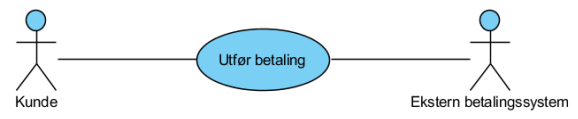

- intro
- modellbasert sys.utvikling (MBSE)
- har kompakt språk
- uml kan beskrive
- krav til komponenter og systemet som helhet
- systemets struktur
- oppførselen til og samarbeidet mellom komponentene i systemet
- visualiserer og kommuniserer et design som kan uttrykkes og deles med andre
- hvorfor modellerer vi?
- utforme et design
- kommunisere et design
- dokumentere et design
- visualisering gjør det lettere å forstå helheten
- mer kompakt og mindre tidkrevende
- diagrammer
- use case-diagram: gir oversikt over brukstilfellene (use case ) i et system. I tillegg beskrives hvert brukstilfelle tekstlig.
- 
- aktivitetsdiagram: beskriver hvilke aktiviteter som er involvert for å få gjennomført et brukstilfelle, hvilken rekkefølge de utføres i og eventuelle betingelser som er involvert

- tilstandsmaskin: brukes for å beskrive mulige tilstander til objekter i systemet og hvilke hendelser som utløser tilstandsendringer

- sekvensdiagram: brukes for å beskrive hvilke meldinger som sendes mellom objektene i systemet for å kunne gjennomføre et brukstilfelle, og i hvilken rekkefølge dette gjøres.

- klassediagram: brukes både til å beskrive kode detaljert og til å beskrive de viktigste entitetene i et domene (domenemodell)

- use case diagram
- typisk og spesifikk brukssituasjon av systemet
- ovale sirkler inneholder verb
- aktør(er) assosieres med brukstilfelle med enkel linje
- include
- et brukstilfelle er en obligatorisk del av et annet tilfelle

- kan gjenbruke brukstilfellet "finn kunde"
- extend
- brukstilfellet er ikke en obligatorisk del av et annet, men blir utført i spesielle tilfeller
- har derfor gjerne en betingelse assosiert med seg
- pila går motsatt vei
- tilleggs-caset utvider base-caset

- systemgrense
- boks rundt brukstilfellene som tilsvarer et system
- eksempel fra forelesning:
- aktører (personer/objekter/entiteter)
- kunder
- hovmester
- resepsjonist
- use cases (handlinger/verb entitetene utfører)
- use case - tekstlig beskrivelse
- beskriver hvert brukstilfelle i detalj

- aktivitetsdiagram
- hvilke aktiviteter som er involvert for å få gjennomført et brukstilfelle
- hvilken rekkefølge de utføres
- hvilke som kan kjøre i parallell
- eventuelle betingelser som er involvert
- egner seg for komplisert programflyt (mye if/goto eller i forretningsprosesser/arbeidsflyt) eller mindre prosesser
- (sekvensdiagram egner seg for oop)

- symboler
- bokser representerer aksjoner (verb)
- sirkler representerer start/slutt (ekstra sirkel rundt sluttnoden)
- fork/join med tjukke stolper
- diamant for spørring
- swim lanes
- fordeler aksjonene over aktørene

- tilstandsmaskin
- illustrerer hvilke tilstander et objekt kan være i og hva som gjør at de endrer tilstand

- start- og slutt-tilstand
- nøsting
- ved betaling feilet, kan kontrollflyten gå tilbake til et tidligere punkt med en node
- sidenavigasjon
- å være på en side kan være en tilstand

- hver tilstand byttes ved en condition
- klassediagram
- domenemodell
- entiteter og forholdet mellom dem

- skal være ukomplisert og forståelig for kunder
- utvikles i samarbeid mellom domeneeksperter og utviklingsteamet
- ligner på databasemodell (ER-diagram), men hensikten er en annen
- domenemodellen er mer konseptuell og overordnet beskrivende
- ER-diagram kommer i senere detaljert modellering, f.eks. databasemodellen
- ER-modell inneholder flere attributter, men ikke operasjoner
- vi tar med:
- navn på assosiasjoner mellom entitetene
- viktige attributter på entitetene
- viktige metoder/operasjoner
- multiplisitet hvis det er viktig for forståelsen av forholdet mellom entitetene
- notater/kommentarer dersom noe er uklart
- sekvensdiagram
- representerer meldinger mellom komponenter i systemet
- komponentene kan være:
- klasser fra et program

- domeneobjekter fra domenemodellen
- subsystemer i et større, sammensatt system
- kalles system-sekvensdiagram
- eks. ved 3 subsystemer:

- numererer handlinger for å vise rekkefølge
- alt viser resultatet av hver forgrening
- klasser
- representeres med bokser: "instans: klasse"

- bruker vanligvis ":klassenavn" eller "klassenavn"
- tidslinje
- tid vises med stiplet tidslinje fra topp til bunn
- smale rektangler viser kontrollflyt
- meldinger
- heltrukken linje og tekst
- på klassenivå er dette en metode, på subsystem-nivå er dette API-kall
- returmeldinger representeres med stiplet linje og tekst
- kreasjon og destruksjon
- kan taas med hvis vesentlig
- kreesjon gir ny boks, destruksjon gir kryss

- loop
- ramme med betingelse

- if
- flere typer rammer:
- opt for if
- alt for if/else
- andre som kan si noe om parallellitet
- if/else